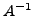

Gan_Matrix mA, mB; /* declare matrices A & B */
/* ... create and fill matrix A, which must be square, create B ... */
gan_mat_invert_q ( &mA, &mB ); /* B = A^-1 */
There is also a routine to create the inverse matrix  from scratch:
Gan_Matrix mA, *pmB; /* declare matrix A */
/* ... create and fill matrix A, which must be square ... */
pmB = gan_mat_invert_s ( &mA ); /* B = A^-1 */
The routines for special square matrices are similar
Gan_Matrix mA, mB, *pmB; /* declare matrices A & B */
/* ... create and fill matrix A, which must be square, create B ... */
gan_squmat_invert_q ( &mA, &mB ); /* B = A^-1, OR */
pmB = gan_squmat_invert_s ( &mA ); /* B = A^-1 */
The type of the output Error detection: If implicit inverse is used (the ..._squmatI_...() or ..._squmatIT_...() routines), the square matrix involved must be non-singular. If the matrix is singular then NULL is returned and the Gandalf error handler is invoked. Other failure modes are failing to create the result matrix and incompatibility between the sizes of the input matrices.